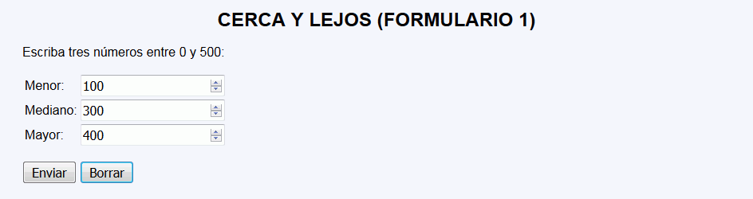
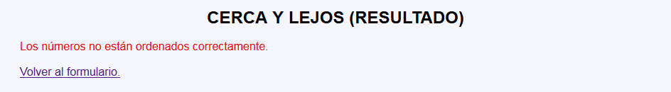
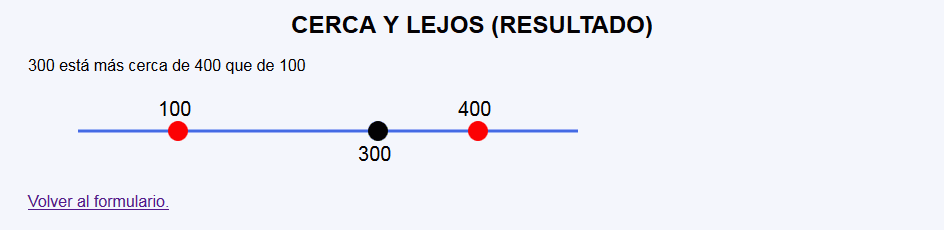
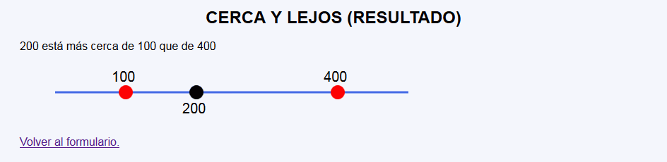
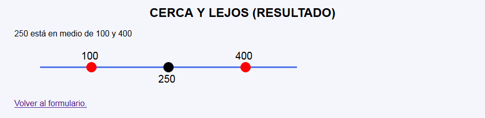
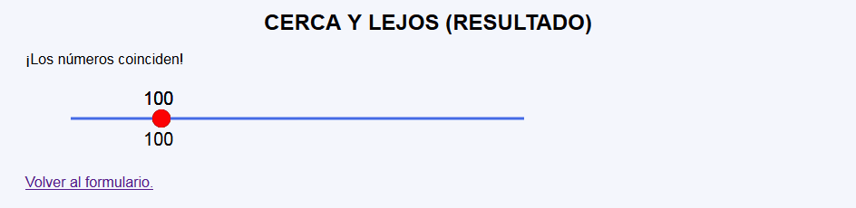

En este ejercicio se debe crear un programa que pida tres números ordenados y diga de cuál está más cerca el de en medio y haga un dibujo con tres puntos sobre una línea:






Los valores del dibujo que dependerán de los valores recibidos se han marcado con un borde. Para que el texto se vea más o menos centrado en el círculo se le han restado 20 unidades a la coordenada x. Los valores recibidos en el ejemplo han sido 100, 300 y 400.
<h1>Cerca y lejos (Resultado)</h1>
<p>300 está más cerca de 400 que de 100</p>
<svg version="1.1" xmlns="http://www.w3.org/2000/svg" width="600" height="80" viewBox="-50 0 600 80">
<line x1="0" y1="40" x2="500" y2="40" stroke-width="3" stroke="RoyalBlue" />
<circle cx="100" cy="40" r="10" fill="red" />
<text x="80" y="25" font-family="sans-serif" font-size="20">100</text>
<circle cx="300" cy="40" r="10" fill="black" />
<text x="280" y="70" font-family="sans-serif" font-size="20">300</text>
<circle cx="400" cy="40" r="10" fill="red" />
<text x="380" y="25" font-family="sans-serif" font-size="20">400</text>
</svg>